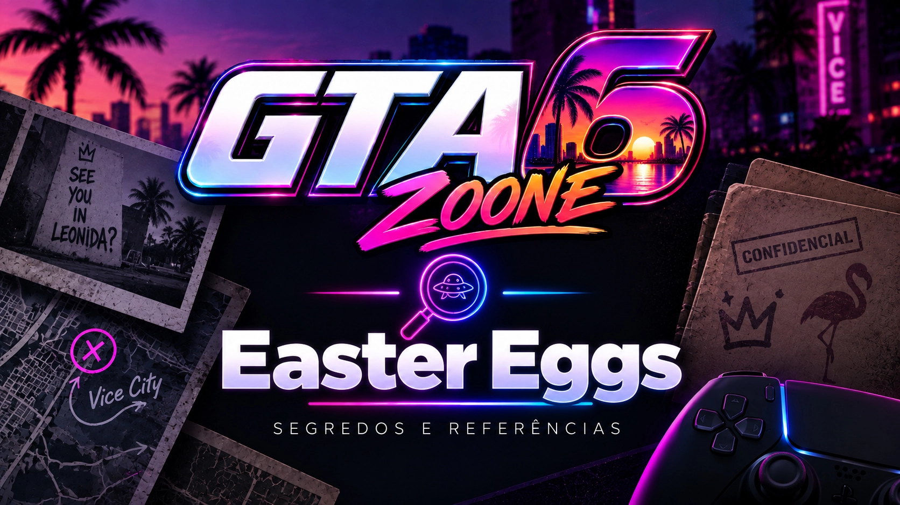

Easter Eggs de GTA VI
Referências, homenagens, piadas internas e conexões escondidas encontradas no mundo de GTA VI.
Esta área reunirá referências que possam estar ligadas a outros jogos da Rockstar, elementos da cultura popular, acontecimentos, obras ou detalhes colocados propositalmente no jogo.
← Voltar para todos os GuiasNEM TODA SEMELHANÇA É UM EASTER EGG: quando uma referência puder ser sustentada por evidências suficientes, isso será explicado. Interpretações que ainda não puderem ser comprovadas serão identificadas claramente.

Easter Eggs encontrados
Os artigos individuais aparecerão nesta área conforme referências puderem ser identificadas e documentadas.
Não vamos preencher esta página com referências inventadas ou interpretações apresentadas como fatos. Conforme o jogo puder ser explorado, cada descoberta relevante poderá receber sua própria página.
O que poderá aparecer aqui
As categorias serão adaptadas conforme os Easter Eggs reais de GTA VI forem encontrados.
Outros GTA
Possíveis referências a outros títulos da série Grand Theft Auto.
Jogos da Rockstar
Referências relacionadas a outras franquias da Rockstar.
Cinema e TV
Possíveis homenagens ou referências a produções audiovisuais.
Música
Referências ligadas à música e à cultura musical.
Cultura popular
Elementos relacionados a referências culturais conhecidas.
Internet
Referências a tendências, comportamentos ou fenômenos digitais.
Piadas internas
Detalhes humorísticos ou referências recorrentes quando identificados.
Outras referências
Easter Eggs que não se encaixem nas categorias anteriores.
Como classificamos cada descoberta
Muitas referências podem depender de interpretação. Por isso, o GTA6Zoone diferencia claramente o que possui evidência do que ainda é apenas uma possibilidade.
A relação pode ser sustentada por elementos claros do jogo ou material oficial.
Existe uma alegação circulando, mas ainda faltam elementos suficientes para confirmá-la.
Uma conexão sugerida por detalhes ou semelhanças, mas que ainda depende de interpretação.
Cada Easter Egg poderá ser documentado
Quando uma descoberta tiver informação suficiente, poderá ganhar sua própria página com evidências, contexto e localização.
Procurando Segredos?
Easter Eggs são referências, homenagens e conexões escondidas. Mistérios, locais ocultos, interações pouco óbvias e outras descobertas ficam na área de Segredos.
Continue na Central de Guias
Todas as principais categorias permanecem interligadas.
Iniciantes
Primeiros passos e sistemas básicos.
Abrir categoria →GUIASDinheiro
Economia, ganhos e gastos.
Abrir categoria →GUIASMissões
Passo a passo da campanha.
Abrir categoria →GUIASVeículos
Como encontrar e utilizar.
Abrir categoria →GUIASArmas
Obtenção e funcionamento.
Abrir categoria →DESCOBERTASSegredos
Mistérios e descobertas.
Abrir categoria →GUIASGuia 100%
Complete tudo em GTA VI.
Abrir categoria →CENTRALTodos os Guias
Voltar ao índice principal.
Abrir Central →Procurando alguma referência?
Use a pesquisa geral para encontrar locais, personagens, veículos, armas e outros conteúdos do GTA6Zoone.